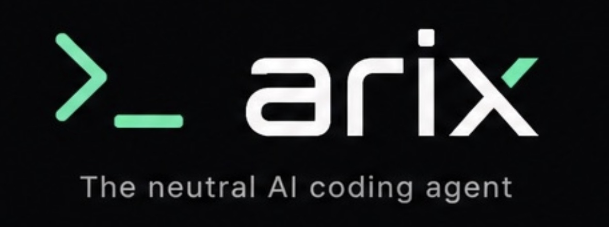

v0.2.3 · MIT licensed · Open sourceArix is an open-source CLI agent that runs against 21 LLM providers, ships 12 first-party skills and 21 MCP servers, and adds the things production teams actually need: cost-bounded runs, multi-repo workspaces, eval suites, audit logs, undo, and privacy-aware routing.
Pick the model that fits the task — Arix routes the call. Switch any time without touching code or prompts.
Not a wrapper around an SDK. A complete runtime: routing, tooling, safety, observability, evaluation.
TDD, code review, debugger, refactor, security audit, perf, architect, migrator, documenter, i18n, PR author, data engineer — disciplined system prompts, not vibes.
arix mcp install github postgres playwright — GitHub, GitLab, Postgres, SQLite, Slack, Linear, Jira, Notion, Sentry, Figma, k8s, AWS/GCP/Azure, and more.
apply_diff, package_manager, test_runner, linter, http_client, db_query, secrets_scan, screenshot, docker_exec, git advanced (rebase/blame/bisect), and more.
Hard $ budget kill-switch, predictive routing, per-skill cost reports, regression alerts, adaptive prompt cache annotation. Stop paying Sonnet prices for Haiku tasks.
Attach N repos to a single session, refactor across them, share context. The cross-repo migration story Cursor and Copilot don't have.
arix undo. Every destructive tool call snapshots first; one command rolls back. The lifeline you need when an agent goes off-rails on production code.
arix eval runs skill regression and provider conformance suites. Golden trace replay catches behavioural drift before it ships.
PII or secrets in your payload? Arix detects and routes that turn to a local Ollama model automatically. Your tokens never leave the box.
arix spec feature.md turns markdown into tracked tasks. arix drift check in CI fails the build when spec and code diverge.
Every tool call, confirmation, and provider request hashed into an SHA-256 chain. Compliance-grade auditability without external infrastructure.
One env var enables OTLP export to Honeycomb, Grafana, Tempo, Jaeger. Every tool call and LLM request becomes a span.
AES-256-GCM with scrypt key derivation for sessions and memory. Your conversations stay on your disk.
Predictive routing estimates the turn cost before calling. Cost arbitrage swaps to a cheaper model when quality stays within your tolerance. Hard budget kill-switch stops the agent before the bill blows up.
arix cost preflight "<prompt>"$ budget hits zero# estimate before you call $ arix cost preflight "refactor auth module" \ --provider anthropic --model claude-sonnet-4-6 Est input: 1,840 tokens Est cost: $0.0083 Recommended: same model # run with a hard budget cap $ arix chat --budget 0.50 --warn-at 0.8 [budget] approaching cap: $0.4023 / $0.5000 [Hard budget reached: $0.5012 — stopping.] # weekly regression alert $ arix cost regression --factor 2 ⚠ ALERT — Spend rose 3.4× from $4.20 to $14.28
# attach 3 repos to one session $ arix workspace create monorepo \ ~/code/web ~/code/api ~/code/shared # cross-repo refactor in one turn $ arix --workspace monorepo ▶ Rename `User` to `Account` across all repos ⚙ grep pattern="User" path=... ⚙ apply_diff path=web/src/auth.ts ... ⚙ apply_diff path=api/src/models.ts ... ⚙ apply_diff path=shared/types.ts ... [snapshot] 14 files captured for undo
Cursor sees one folder. Copilot sees the file. Arix sees your whole stack. Attach N repos and the agent navigates them as one workspace — paths, imports, types, and all.
arix undo rolls back the entire multi-repo editRun regression suites against your skills, against every provider you support, against your own custom in-repo eval cases. Golden traces compare today's agent run to a known-good NDJSON fingerprint and fail loudly on drift.
arix eval --filearix drift check --all in CI catches spec ↔ code drift$ arix eval --suite all Eval results: skill-regression 5/5 (100%) avg=1.00 3ms provider-conformance:anthropic 2/2 (100%) avg=1.00 812ms provider-conformance:groq 2/2 (100%) avg=1.00 144ms provider-conformance:deepseek 2/2 (100%) avg=0.95 308ms ✓ all evals passed $ arix drift check --all ✓ ok features/login.md ✓ ok features/billing.md ✶ DRIFT features/onboarding.md exit 1 # CI fails
Updated 2026-Q2. We run all of these in production, so this matrix is from real use, not marketing.
| Arix | Claude Code | OpenCode | Aider | Forge | Cursor | Copilot CLI | |
|---|---|---|---|---|---|---|---|
| Open sourceMIT-licensed source we host | ✓ | CLI only | ✓ | ✓ | ✓ | — | — |
| CLI-nativeDesigned for the terminal | ✓ | ✓ | ✓ | ✓ | ✓ | — | ✓ |
| Provider-agnosticBring any LLM | 21 providers | Anthropic only | 3 providers | ~6 via API | ~8 | via API key | GitHub only |
| MCP catalogOne-command server install | 21 servers | ✓ | manual | — | — | manual | — |
| First-party skill libraryDisciplined system prompts | 12 bundled | 3-4 | — | — | — | — | — |
| Multi-repo workspacesCross-repo refactor | ✓ | — | — | — | — | single project | — |
| Spec-driven dev + drift watcherCI-friendly markdown specs | ✓ | — | — | — | — | — | — |
Reversible runs (undo)Roll back destructive ops |
✓ | — | — | git only | — | — | — |
Hard $ budget kill-switchStop the bill, mid-task |
✓ | — | — | — | — | org cap | — |
| Cost arbitrageAuto-downgrade within tolerance | ✓ | — | — | — | — | — | — |
| Adaptive prompt cacheAnthropic cache hit auto | ✓ | ✓ | — | — | — | — | — |
| Privacy-aware routingPII → local model | ✓ | — | — | — | — | — | — |
| Eval suiteSkill + provider conformance | ✓ | — | — | — | — | — | — |
| Golden trace replayRegression detection | ✓ | — | — | — | — | — | — |
| Tamper-evident audit logSHA-256 chain | ✓ | — | — | — | — | — | — |
| OpenTelemetry exportHoneycomb, Grafana, etc. | ✓ | — | — | — | — | — | — |
| Local-first encryptionAES-256-GCM at rest | ✓ | — | — | — | — | — | — |
| Diff-style editsToken-efficient patches | apply_diff | ✓ | ✓ | signature feature | basic | via Composer | — |
| IDE pluginVSCode / JetBrains | VSCode WIP | — | — | — | — | native IDE | native |
| GitHub ActionAutomated PR review | arix-review | — | — | — | — | — | ✓ |
| Reversible per-tool sandboxDocker exec + path policy | docker_exec | — | — | — | — | workspace | — |
| Pricing modelWhat it costs to use | free + your API key | your API key | free | free | freemium | $20/mo + tokens | $10/mo |
Pick the tool that fits your need. Pick Arix when you want full control of your stack — provider, hosting, audit trail, budget, and evaluation.
No accounts, no logins, no usage caps. Set your provider key, type arix chat, ship.
npm i -g @arix-code/arix
Or with your favourite manager: pnpm add -g @arix-code/arix · brew install amirtechai/arix/arix
export ANTHROPIC_API_KEY=sk-ant-... arix config set provider anthropic arix config set model claude-sonnet-4-6
21 providers supported. arix provider list to see all.
arix chat # or one-shot: arix --resume "fix the failing tests"
Confirmations on by default for write tools. Run arix --help to see every command.
# add MCP servers $ arix mcp install github postgres playwright \ --env GITHUB_PERSONAL_ACCESS_TOKEN=ghp_... # multi-repo workspace $ arix workspace create monorepo ~/code/web ~/code/api # spec-driven feature $ arix spec features/login.md $ arix drift check --all # in CI # reverse a destructive change $ arix undo # scan for accidentally committed secrets $ arix redact session.log --check
Open source. Provider-agnostic. Production-grade. Set up in 60 seconds.